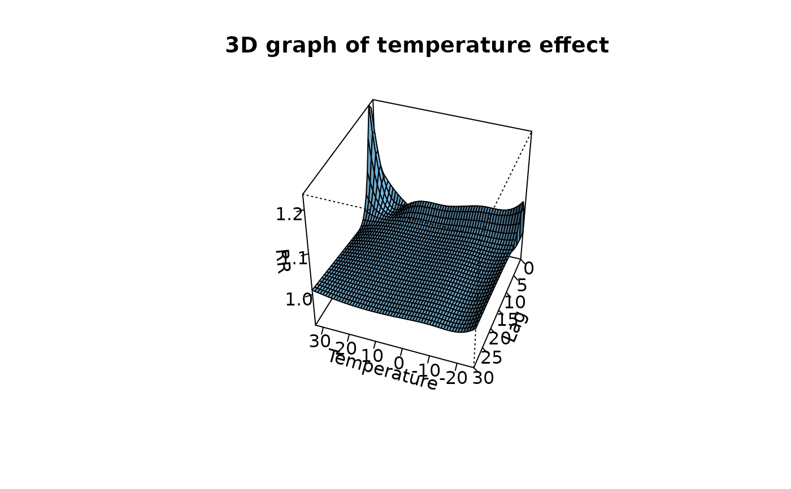
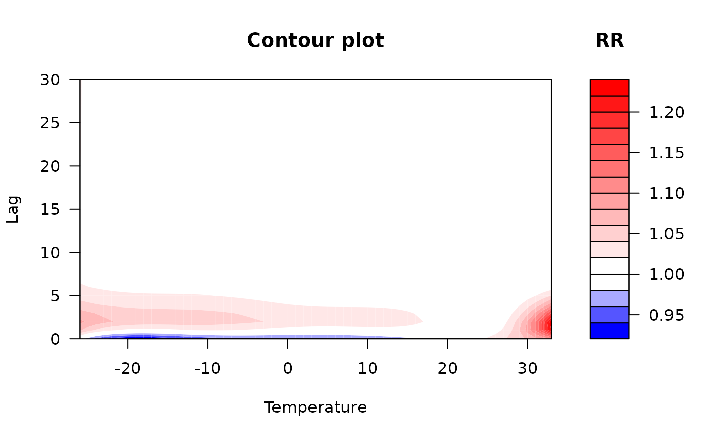
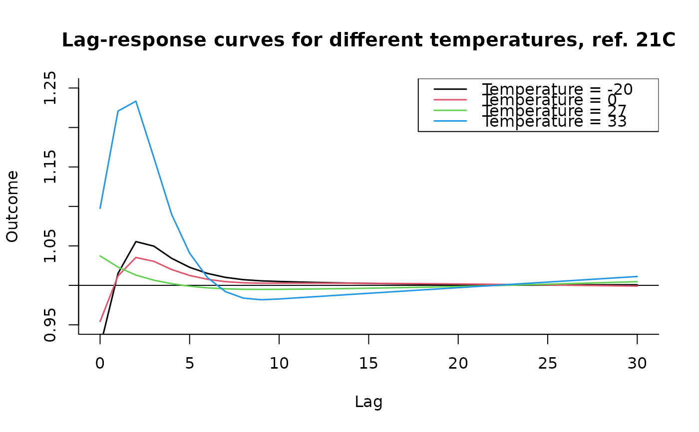
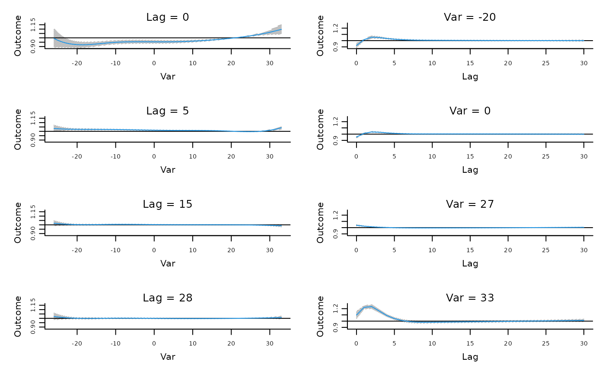
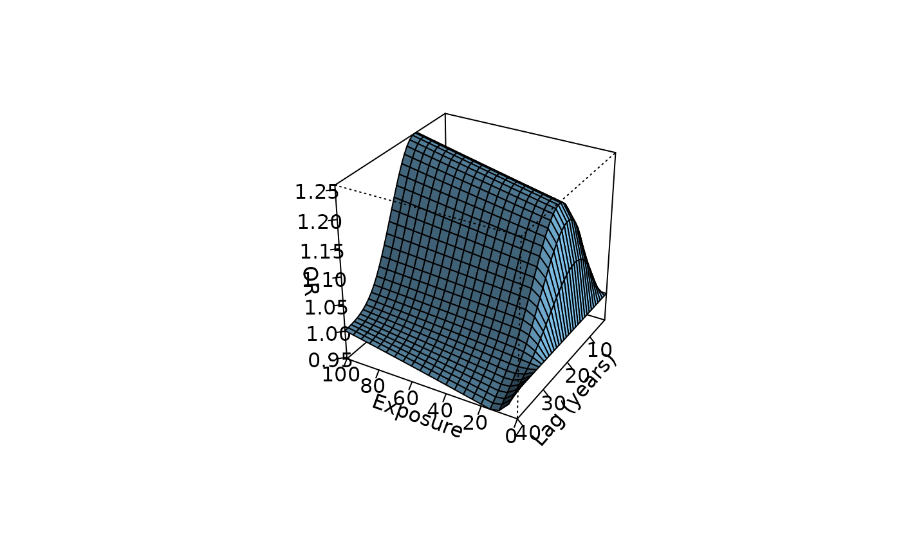
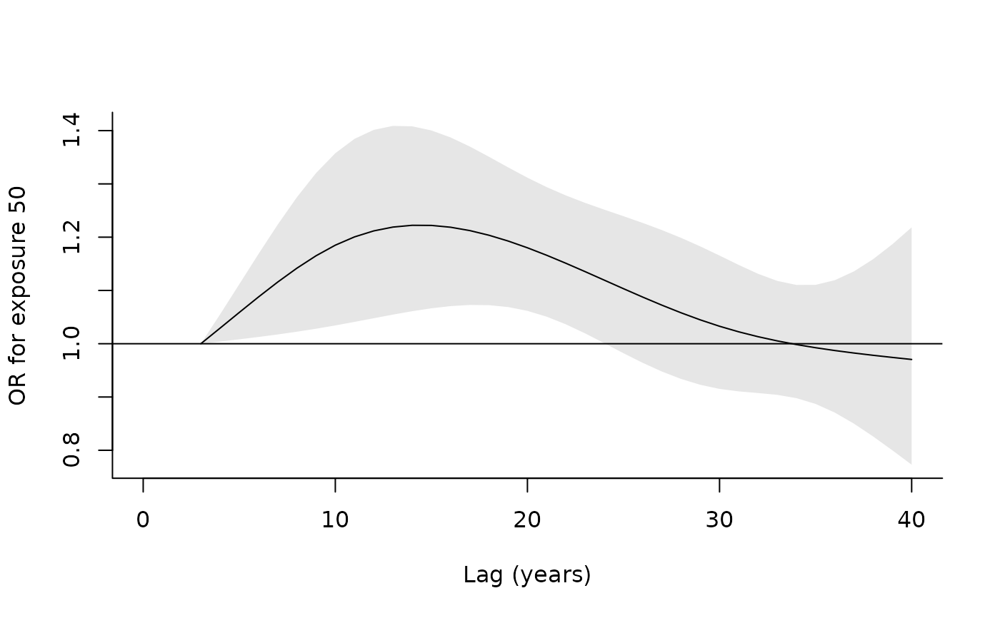
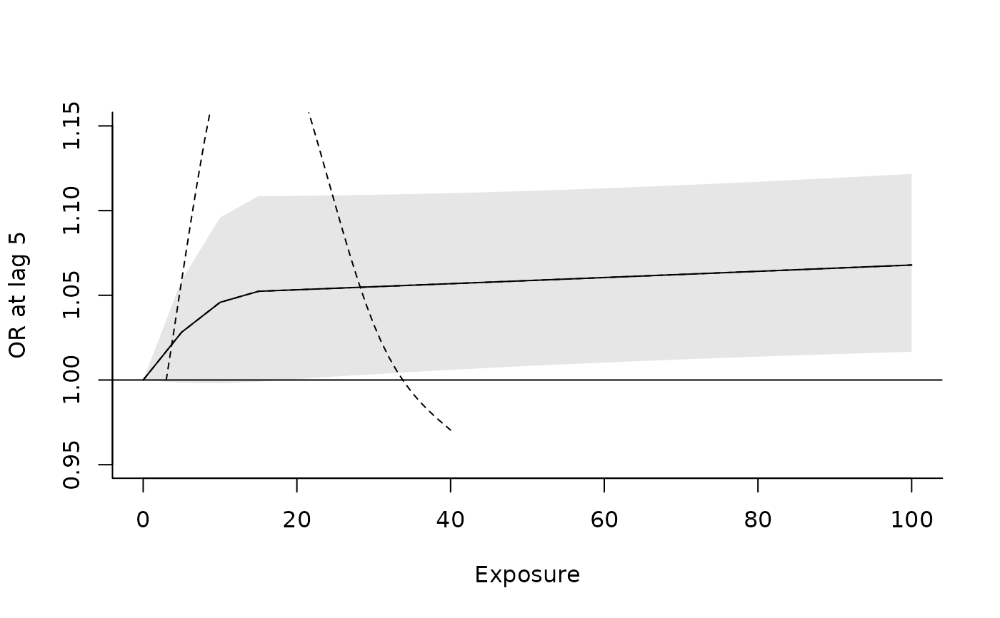
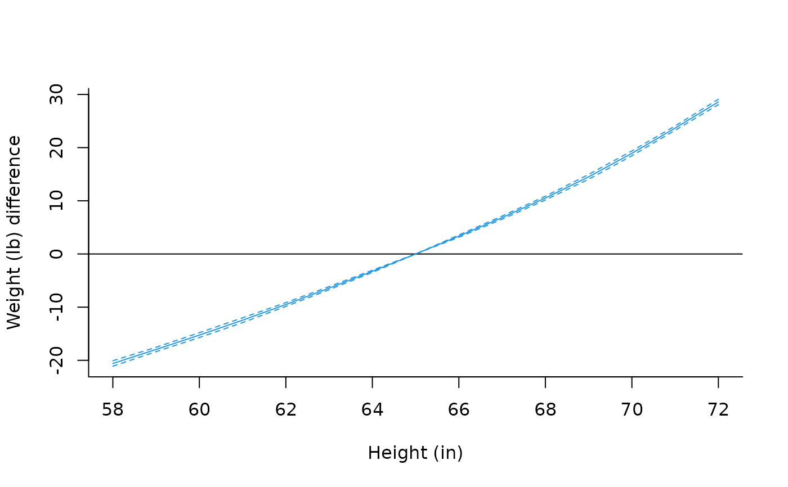
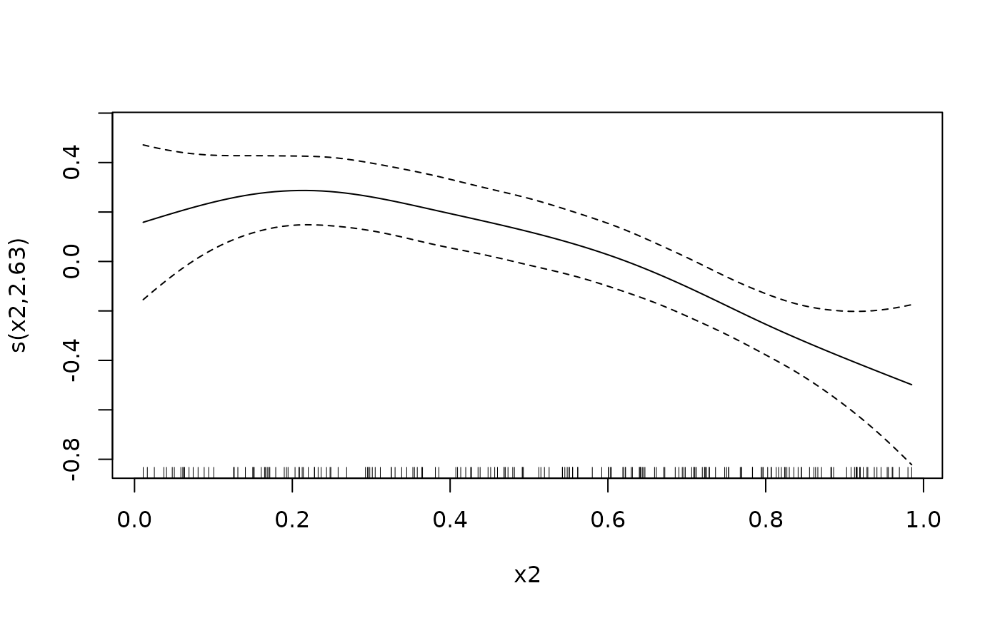
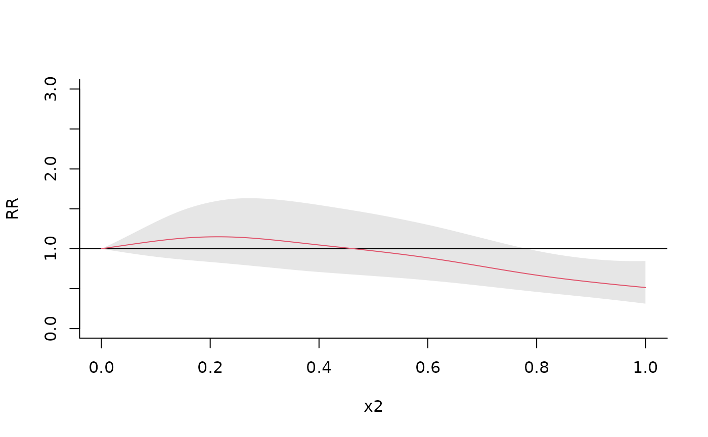

plot.crosspred.RdHigh and low-level method functions for graphs (3d, contour, slices and overall) of predictions from distributed lag linear (DLMs) and non-linear (DLNMs) models.
# S3 method for class 'crosspred'
plot(x, ptype, var=NULL, lag=NULL, ci="area", ci.arg,
ci.level=x$ci.level, cumul=FALSE, exp=NULL, ...)
# S3 method for class 'crosspred'
lines(x, ptype, var=NULL, lag=NULL, ci="n", ci.arg,
ci.level=x$ci.level, cumul=FALSE, exp=NULL, ...)
# S3 method for class 'crosspred'
points(x, ptype, var=NULL, lag=NULL, ci="n", ci.arg,
ci.level=x$ci.level, cumul=FALSE, exp=NULL, ...)an object of class "crosspred".
type of plot. Default to "3d" for lagged relationship, otherwise "overall". Other options are "slices" and "contour". See Details below.
vectors (for plot) or numeric scalars (for lines-points) of predictor or lag values, respectively, at which specific associations must be plotted. Used only if ptype="slices".
type of confidence intervals representation: one of "area", "bars", "lines" or "n". Default to "area" in high level functions, "n" for low-level functions.
list of arguments to be passed to low-level plotting functions to draw the confidence intervals. See Details.
confidence level for the computation of confidence intervals.
logical. If TRUE, incremental cumulative associations along lags are plotted. Used only if type="slices". See Details.
logical. It forces the choice about the exponentiation. See Details.
optional graphical arguments. See Details.
Different plots can be obtained by choosing the following values for the argument ptype:
"3d": a 3-D plot of predicted associations on the grid of predictor-lag values. Additional graphical arguments can be included, such as theta-phi (perspective), border-shade (surface), xlab-ylab-zlab (axis labelling) or col. See persp for additional information.
"contour": a contour/level plot of predicted associations on the grid of predictor-lag values. Additional graphical arguments can be included, such as plot.title-plot.axes-key.title for titles and axis and key labelling. Arguments x-y-z and col-level are automatically set and cannot be specified by the user. See filled.contour for additional information.
"overall": a plot of the overall cumulative exposure-response associations over the whole lag period. See plot.default, lines and points for information on additional graphical arguments.
"slices": a (optionally multi-panel) plot of exposure-response association(s) for specific lag value(s), and/or lag-response association(s) for specific predictor value(s). Predictor and lag values are chosen by var and lag, respectively. See plot.default, lines and points for information on additional graphical arguments.
The method function plot calls the high-level functions listed above for each ptype, while lines-points add lines or points for ptype equal to "overall" or "slices". These methods allow a great flexibility in the choice of graphical parameters, specified through arguments of the original plotting functions. Some arguments, if not specified, are set to different default values than the original functions.
Confidence intervals are plotted for ptype equal to "overall" or "slices". Their type is determined by ci, with options "area" (default for plot), "bars", "lines" or "n" (no confidence intervals, default for points and lines). Their appearance may be modified through ci.arg, a list of arguments passed to to low-level plotting functions: polygon for "area", segments for "bars" and lines for "lines". See the original functions for a complete list of the arguments. This option offers flexibility in the choice of confidence intervals display. As above, some unspecified arguments are set to different default values.
For ptype="slices", up to 4 plots for each dimension of predictor and lags are allowed in plot, while for lines-points a single plot in one of the two dimension must be chosen. Incremental cumulative associations along lags are reported if cumul=TRUE: in this case, the same option must have been set to obtain the prediction saved in the crosspred object (see crosspred).
For a detailed illustration of the use of the functions, see:
vignette("dlnmOverview")
Gasparrini A. Distributed lag linear and non-linear models in R: the package dlnm. Journal of Statistical Software. 2011;43(8):1-20. [freely available here].
Gasparrini A, Scheipl F, Armstrong B, Kenward MG. A penalized framework for distributed lag non-linear models. Biometrics. 2017;73(3):938-948. [freely available here]
Gasparrini A. Modeling exposure-lag-response associations with distributed lag non-linear models. Statistics in Medicine. 2014;33(5):881-899. [freely available here]
Gasparrini A., Armstrong, B.,Kenward M. G. Distributed lag non-linear models. Statistics in Medicine. 2010;29(21):2224-2234. [freely available here]
All the predictions are plotted using a reference value corresponding to the centering point for continuous functions or different values for the other functions (see the related help pages). This is determined by the argument cen in crosspred. Exponentiated predictions are returned by default if x$model.link is equal to "log" or "logit".
These methods for class "crosspred" have replaced the old function crossplot since version 1.3.0.
The values in var and lag must match those specified in the object crosspred (see crosspred).
crossbasis to generate cross-basis matrices. crosspred to obtain predictions after model fitting.
See dlnm-package for an introduction to the package and for links to package vignettes providing more detailed information.
### example of application in time series analysis - see vignette("dlnmTS")
# create the crossbasis object for pm10
cb3.pm <- crossbasis(chicagoNMMAPS$pm10, lag=1, argvar=list(fun="lin"),
arglag=list(fun="strata"))
# create the crossbasis object for temperature
varknots <- equalknots(chicagoNMMAPS$temp,fun="bs",df=5,degree=2)
lagknots <- logknots(30, 3)
cb3.temp <- crossbasis(chicagoNMMAPS$temp, lag=30, argvar=list(fun="bs",
knots=varknots), arglag=list(knots=lagknots))
# summarize
summary(cb3.pm)
#> CROSSBASIS FUNCTIONS
#> observations: 5114
#> range: -3.049835 to 356.1768
#> lag period: 0 1
#> total df: 1
#>
#> BASIS FOR VAR:
#> fun: lin
#> intercept: FALSE
#>
#> BASIS FOR LAG:
#> fun: strata
#> df: 1
#> ref: 1
#> intercept: TRUE
#>
summary(cb3.temp)
#> CROSSBASIS FUNCTIONS
#> observations: 5114
#> range: -26.66667 to 33.33333
#> lag period: 0 30
#> total df: 30
#>
#> BASIS FOR VAR:
#> fun: bs
#> knots: -11.66667 3.333333 18.33333
#> degree: 3
#> intercept: FALSE
#> Boundary.knots: -26.66667 33.33333
#>
#> BASIS FOR LAG:
#> fun: ns
#> knots: 1.105502 3.322105 9.983144
#> intercept: TRUE
#> Boundary.knots: 0 30
#>
# run the model and get the predictions for temperature
library(splines)
model3 <- glm(death ~ cb3.pm + cb3.temp + ns(time, 7*14) + dow,
family=quasipoisson(), chicagoNMMAPS)
pred3.temp <- crosspred(cb3.temp, model3, cen=21, by=1)
# 3-D and contour plots
plot(pred3.temp, xlab="Temperature", zlab="RR", theta=200, phi=40, lphi=30,
main="3D graph of temperature effect")

plot(pred3.temp, "contour", xlab="Temperature", key.title=title("RR"),
plot.title=title("Contour plot",xlab="Temperature",ylab="Lag"))

# lag-response curves specific to different temperature values
plot(pred3.temp, "slices", var=-20, ci="n", col=1, ylim=c(0.95,1.25), lwd=1.5,
main="Lag-response curves for different temperatures, ref. 21C")
for(i in 1:3) lines(pred3.temp, "slices", var=c(0,27,33)[i], col=i+1, lwd=1.5)
legend("topright",paste("Temperature =",c(-20,0,27,33)), col=1:4, lwd=1.5)

# in one plot
plot(pred3.temp, "slices", var=c(-20,0,27,33), lag=c(0,5,15,28), col=4,
ci.arg=list(density=40,col=grey(0.7)))

### example of application beyond time series - see vignette("dlnmExtended")
# generate the matrix of exposure histories from the 5-year periods
Qnest <- t(apply(nested, 1, function(sub) exphist(rep(c(0,0,0,sub[5:14]),
each=5), sub["age"], lag=c(3,40))))
# define the cross-basis
cbnest <- crossbasis(Qnest, lag=c(3,40), argvar=list("bs",degree=2,df=3),
arglag=list(fun="ns",knots=c(10,30),intercept=FALSE))
summary(cbnest)
#> CROSSBASIS FUNCTIONS
#> observations: 600
#> range: 0 to 1064
#> lag period: 3 40
#> total df: 9
#>
#> BASIS FOR VAR:
#> fun: bs
#> knots: 15
#> degree: 2
#> intercept: FALSE
#> Boundary.knots: 0 1064
#>
#> BASIS FOR LAG:
#> fun: ns
#> knots: 10 30
#> intercept: FALSE
#> Boundary.knots: 3 40
#>
# run the model and predict
library(survival)
mnest <- clogit(case~cbnest+strata(riskset), nested)
pnest <- crosspred(cbnest,mnest, at=0:20*5, cen=0)
# bi-dimensional exposure-lag-response association
plot(pnest, zlab="OR", xlab="Exposure", ylab="Lag (years)")

# lag-response curve for dose 60
plot(pnest, var=50, ylab="OR for exposure 50", xlab="Lag (years)", xlim=c(0,40))

# exposure-response curve for lag 10
plot(pnest, lag=5, ylab="OR at lag 5", xlab="Exposure", ylim=c(0.95,1.15))
### example of extended predictions - see vignette("dlnmExtended")
# compute exposure profiles and exposure history
expnested <- rep(c(10,0,13), c(5,5,10))
hist <- exphist(expnested, time=length(expnested), lag=c(3,40))
# predict association with a specific exposure history
pnesthist <- crosspred(cbnest, mnest, cen=0, at=hist)
with(pnesthist, c(allRRfit,allRRlow,allRRhigh))
#> 20 20 20
#> 3.503928 1.240109 9.900351
### example of user-defined functions - see vignette("dlnmExtended")
# define a log function
mylog <- function(x) log(x+1)
# define the cross-basis
cbnest2 <- crossbasis(Qnest, lag=c(3,40), argvar=list("mylog"),
arglag=list(fun="ns",knots=c(10,30),intercept=FALSE))
#> Error in get(fun, mode = "function", envir = envir): object 'mylog' of mode 'function' was not found
summary(cbnest2)
#> Error: object 'cbnest2' not found
# run the model and predict
mnest2 <- clogit(case~cbnest2+strata(riskset), nested)
#> Error in eval(predvars, data, env): object 'cbnest2' not found
pnest2 <- crosspred(cbnest2, mnest2, cen=0, at=0:20*5)
#> Error: object 'cbnest2' not found
# plot and compare with previous fit
plot(pnest2, zlab="OR", xlab="Exposure", ylab="Lag (years)")
#> Error: object 'pnest2' not found
plot(pnest2, var=50, ylab="OR for exposure 50", xlab="Lag (years)", xlim=c(0,40))
#> Error: object 'pnest2' not found
lines(pnest, var=50, lty=2)
plot(pnest2, lag=5, ylab="OR at lag 5", xlab="Exposure", ylim=c(0.95,1.15))
#> Error: object 'pnest2' not found
lines(pnest, lag=5, lty=2)

### example of general use for regression models - see vignette("dlnmExtended")
# replicate example illustrated in help(ns)
library(splines)
oneheight <- onebasis(women$height, "ns", df=5)
mwomen <- lm(weight ~ oneheight, data=women)
pwomen <- crosspred(oneheight, mwomen, cen=65, at=58:72)
with(pwomen, cbind(allfit, alllow, allhigh)["70",])
#> allfit alllow allhigh
#> 18.92287 18.46545 19.38030
plot(pwomen, ci="l", ylab="Weight (lb) difference", xlab="Height (in)", col=4)

# replicate example illustrated in help(gam)
library(mgcv)
dat <- gamSim(1,n=200,dist="poisson",scale=.1)
#> Gu & Wahba 4 term additive model
b2 <- gam(y ~ s(x0,bs="cr") + s(x1,bs="cr") + s(x2,bs="cr") + s(x3,bs="cr"),
family=poisson, data=dat, method="REML")
plot(b2, select=3)

pgam <- crosspred("x2", b2, cen=0, at=0:100/100)
with(pgam, cbind(allRRfit, allRRlow, allRRhigh)["0.7",])
#> allRRfit allRRlow allRRhigh
#> 0.7786604 0.5347209 1.1338852
plot(pgam, ylim=c(0,3), ylab="RR", xlab="x2", col=2)

### example of penalized models - see vignette("dlnmPenalized")
# to be added soon